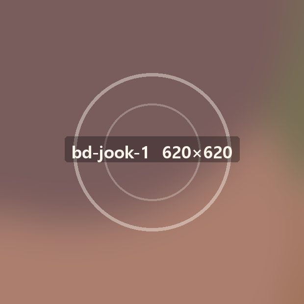
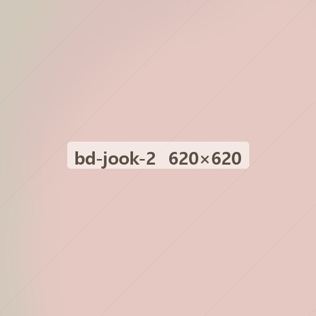
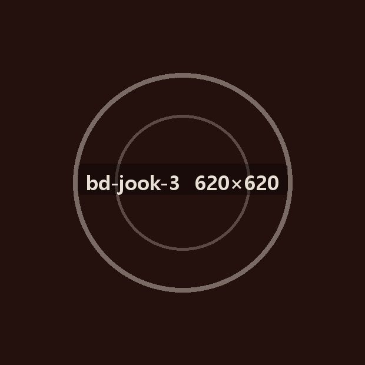
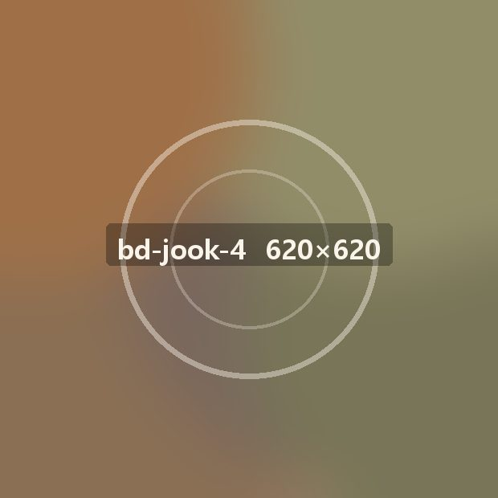

아침마다 새로 쑤는 죽 · 2003년 시작 · 전국 1,860곳
우리 동네에 온죽만 그대로인 이유
죽은 재료가 남지 않습니다. 그날 판 만큼만 쌀을 불리고, 남은 재료는 다음 날 다른 메뉴로 들어갑니다. 버리는 게 적으면 이익이 남습니다.
폐점률 1%, 외식 평균의 11분의 1
- 1%온죽
- 6%한식 평균
- 11%외식 전체
- 17%카페
2021년부터 2026년까지 5년 동안 문을 닫은 온죽 매장은 해마다 스무 곳 아래입니다.
오래 하고 자녀에게 물려주는 매장
열 해 넘게 운영 중인 매장이 절반을 넘습니다. 스무 해를 넘긴 매장도 예순두 곳입니다.
따라올 수 없는 1등 브랜드의 자리
- 3122010
- 7402015
- 1,1902020
- 1,8602026
죽 전문점 가운데 매장 수 1위입니다.
온죽에 비빔밥을 더해 점심 매출을 올립니다
죽만 팔면 아침과 저녁이 비었습니다. 같은 주방에서 비빔밥을 내면 점심 두 시간이 채워집니다.




포장·배달·홀 매출의 균형
- 38%포장
- 34%배달
- 28%홀
한쪽에 몰리지 않아 배달 수수료가 올라도 버팁니다.